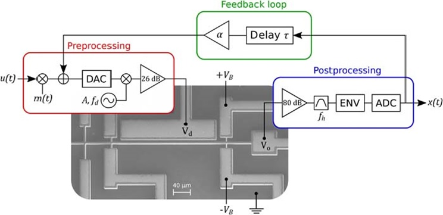
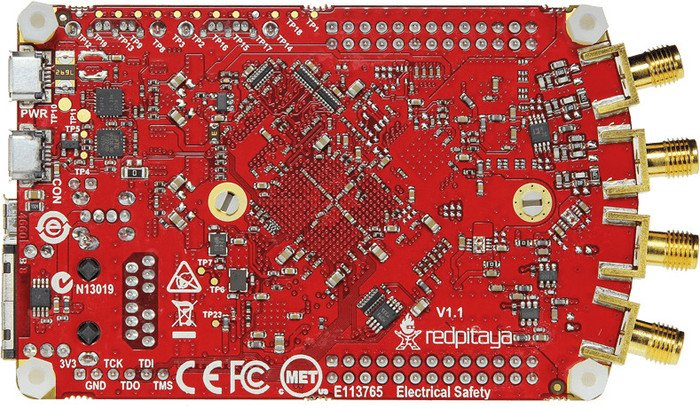
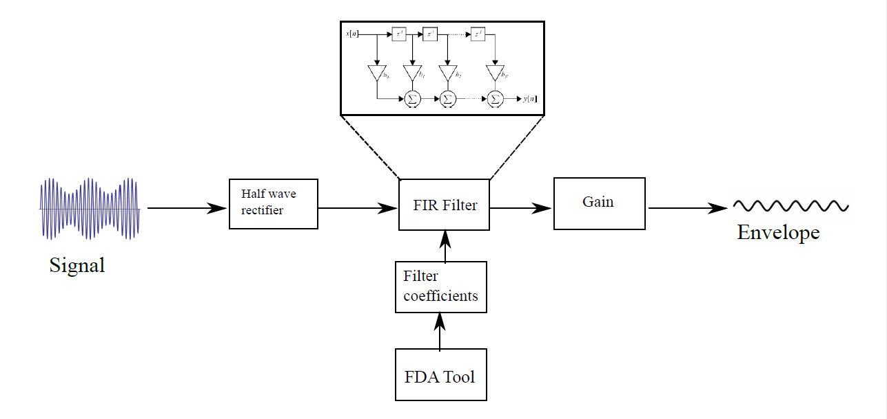

Here are some projects

Embedded IoT System with STM32F407 & Mixed-Signal PCB Design
May 2025 - Present
At Kashsoft, I developed a fully functional embedded IoT hardware system using an STM32F407 microcontroller. I designed a 4-layer mixed-signal PCB in Altium Designer, integrating various environmental and motion sensors via I²C, UART, CAN, USB, and BLE protocols. The system enabled real-time data transmission with efficient power management. Firmware was written in Embedded C using STM32CubeIDE. I handled component soldering (SMD), functional testing, and debugging using oscilloscopes and multimeters, ensuring signal integrity and system reliability.
Master's Thesis – Bio-Inspired Acoustic Sensor System on Nexys A7-100T FPGA
May 2024 - October 2024
For my thesis at IMMS, I developed a bio-inspired acoustic sensing system on the Digilent Nexys A7-100T FPGA using Xilinx Vivado and Verilog/VHDL. The system processed audio signals across the 20 Hz – 20 kHz range, mimicking adaptive biological feedback. I designed FIR filters and adaptive control algorithms in MATLAB, and built a custom GUI for live system control and visualization via TCP/IP. Signal acquisition used SPI-based ADC (Pmod AD1) and DAC (Pmod DA2), with hardware validation conducted using logic analyzers and oscilloscopes. The project aimed at improving real-time processing for hearing aid technologies.

Real-Time Reservoir Computing with Duffing-Type Bio-Sensor on Zynq-7000 FPGA (STEMLab 125-14)
September 2023 - April 2024
Using the Red Pitaya STEMLab 125-14 (Zynq-7000 SoC), I implemented a Duffing oscillator-based reservoir computing system for real-time signal classification. Logic was developed in Verilog/VHDL, integrating the programmable logic (PL) with the ARM Cortex-A9 processor via AXI for hybrid control. ADC and DAC communication was managed via SPI, and the system was tested and deployed using Linux-based tools (SSH, WinSCP). This project explored the use of nonlinear dynamics in neuromorphic sensing systems.

Hopfield-Type Bio-Inspired Sensor System on Zynq-7000 FPGA (STEMLab 125-14)
April 2024 - September 2024
This system used Hopfield-type oscillators modeled in hardware to enable adaptive signal processing. Built on the Red Pitaya STEMLab 125-14 (Zynq-7000 FPGA), I implemented VHDL logic and controlled the system via ARM Cortex-A9 using AXI interfaces. SPI-connected ADCs and DACs facilitated signal I/O. I developed a real-time feedback loop capable of self-tuning.This project advanced neuromorphic techniques for hardware-based sensing.

FIR-Based Peak Detection Module (Integrated with FPGA Bio-Inspired Sensor Systems)
December 2023 - May 2024
I developed a low-pass FIR filter in MATLAB (~5 kHz cutoff) and implemented it on the Nexys A7-100T FPGA using Vivado to enable real-time peak detection. This module was integrated into my bio-inspired acoustic sensing systems, including Duffing and Hopf-type oscillator models. It played a key role in tuning system dynamics near bifurcation points, enhancing sensitivity to weak signals—mimicking auditory system behavior.